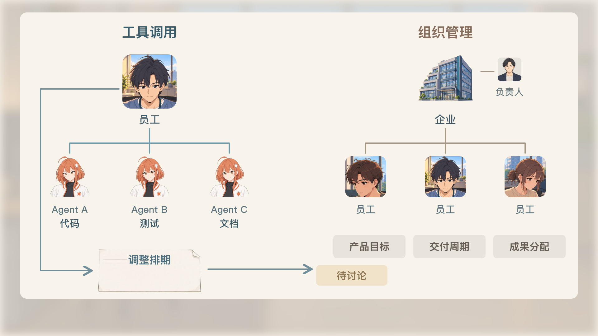
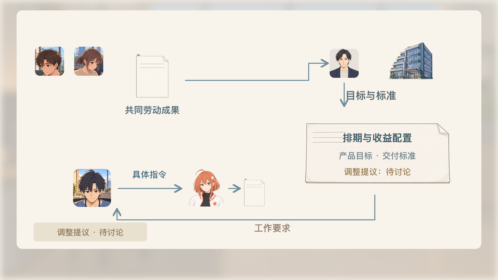

05 · 美术与分层关键态
调用与组织关系
交付与验收
等候新指令
停顿与重新输入
白板与广告
目的与尺度
上一态
下一态
循环查看关键态
标语／广告层
动作反馈层
字幕安全区
6张新完整绘稿 · 原生文字／头像关系层可单独检查；这是素材与有限关键态，尚未接入45秒动态／全片。
素材与prompt记录
图层与库存
可编辑画面文字
13镜分镜
代表构图

调用与组织关系 · 3
交付与验收 · 1
交付与验收 · 2
等候新指令 · 2
停顿与重新输入 · 1
白板与广告 · 1
停顿与重新输入 · 2

目的与尺度 · 2